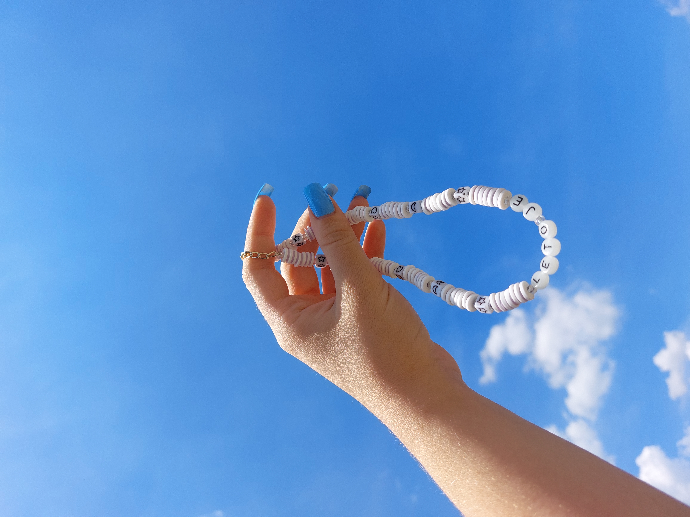
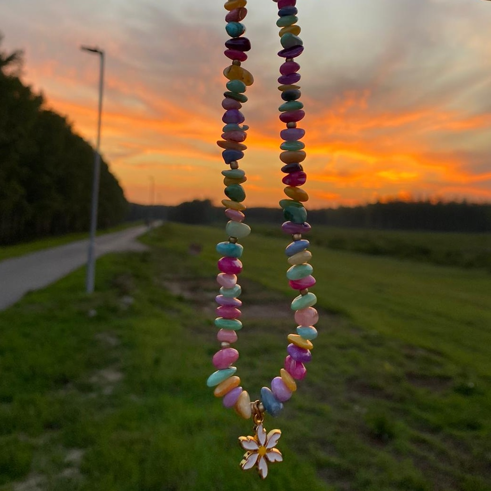

Angel.jewellry u prevodu andjeoski nakit.
Pre tačno tri godine moja jako bliska drugarica je odlucila da mi napravi instagram profil, gde bih mogla postavljala slike nakita, da bi i drugi mogli da primete moj rad. Na početku mi se nije svidela idea o otvaranju instagram naloga, ali uzela mi je telefon iz ruke i ubrzo me nagovorila. U mom malom biznisu su me podržavali svi i drugarice su mi se priključile u pravljenju ogrlica. zajedno smo ih slikale i razmisljale o planovima za dalje. U samim početcima treba biti strpljiv, jer ne možete odma na početku očekivati da će svi to primetiti. Potrebno je samo da se trudite, budete strpljivi, uporni i najvažnije kreativni. Posle nekog vremena počela sam da dobijam puno pratilaca i lajkova. Devojke su bile zainteresovane za moj nakit, što je mene činilo da se osećam presrećno.
evo i nekih slika mog nakita:

